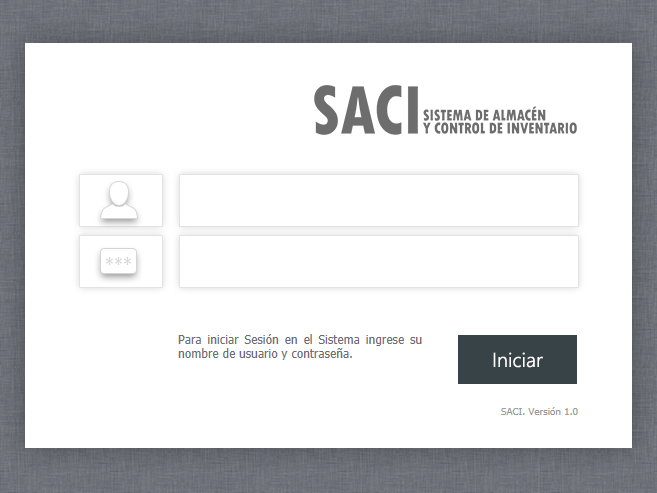

/ Inicio de Sesión.
Inicio de Sesión.
Para iniciar de manera segura en el sistema, introduzca su nombre de usuario y contraseña que le fueron asignados previamente por el Administrador.
Al finalizar haga clic en el botón "Iniciar".
Para iniciar de manera segura en el sistema, introduzca su nombre de usuario y contraseña que le fueron asignados previamente por el Administrador.
Al finalizar haga clic en el botón "Iniciar".